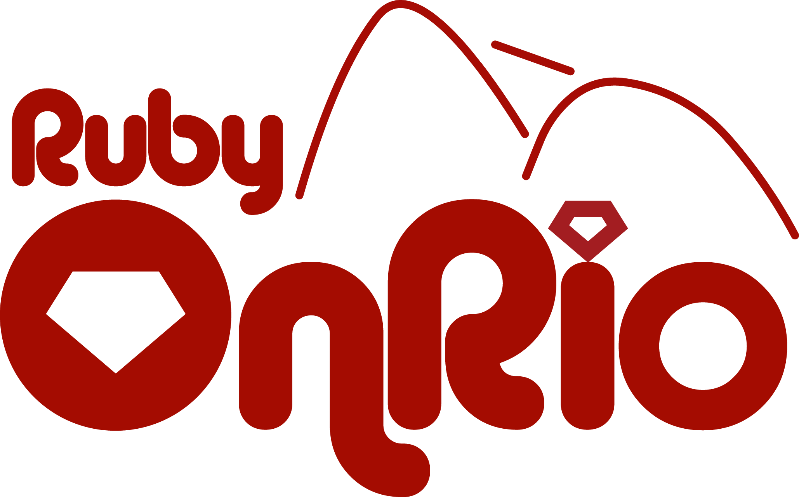

Olá meninas!
Estamos felizes em anunciar que Rio de Janeiro irá sediar a quinta edição do Rails Girls no Brasil! É um curso gratuito de dois dias, que irá lhe abrir as portas para o excitante mundo da programação web, com Ruby on Rails. Não necessário nenhum conhecimento prévio em T.I.
INSCRIÇÕES ENCERRADAS
Confirmação das Inscrições: Até 12 de Dezembro
Rails Girls dá ferramentas para garotas e mulheres construirem os seus sonhos e idéias.
Você vai aprender sobre design e linguagem de programação com a ajuda dos nossos coaches.
Quer Ajudar? Estamos procurando voluntários, patrocinadores e Rails coaches Email.
| 19:30 |
Introdução ao Rails GirlsCredenciamento + Coffee Break |
|---|---|
| 19:50 |
MensagemÉ de alguém muito especial - surpresa :) |
| 20:00 |
Festa de InstalaçãoVamos montar todos juntos o nosso ambiente de trabalho. Conheça melhor os participantes! Traga o seu notebook e instalarmos o Ruby on Rails com você |
| 21:30 |
Final do 1° dia do Rails Girls RJ |
| 9:00 |
Confirmação do seu cadastro & Café da Manhã |
|---|---|
| 9:40 |
Boas-vindas |
| 9:50 |
Mensagem - Grupo convidadoNerds de Batom falarão um pouquinho conosco |
| 10:00 |
Mulheres de TIGláucia Peres falará como é a relação entre Mulheres e TI e muito mais |
Início das palestras - momento de prestar ainda mais atenção |
10:30 |
Palestra - Programação para Front End |
| 11:00 |
Palestra - Conceitos importantes para começar a programar |
| 11:30 |
Palestra - Introdução ao Ruby On Rails |
| 12:00 |
Pausa para o almoço |
| 13:00 |
Volta do almoço e Mini Palestras |
Colocando a mão na massa |
|
| 14:15 |
Workshop de Ruby On RailsProgramar com os coaches! Tire suas dúvidas com eles! Formaremos pequenos grupos para cada coach! |
| 15:30 | Um instantinho para o lanche da tarde e mais surpresa ^.^ |
| 16:00 | Voltamos do lanche e continuamos o workshop Os grupos feitos deverão permanecer trabalhando juntos nas atividades já iniciadas. |
| 17:30 |
Apresentação dos trabalhosAquele momento feliz em que mostramos o resultado de tudo o que aprendemos |
| 18:00 |
Fim do evento e que tal continuarmos a conversa??Bate-papo sobre o que rolou no evento, sorteios e agradecimentos. |
| 19:00 |
EncerramentoPara as meninas que quiserem, a organização pretende ir para um bar e fechar o dia conversando, comemorando o evento. Participar deste momento é totalmente opcional, mas todas são muito bem vindas! |
INSCRIÇÕES ENCERRADAS
Confirmação da inscrição:12 de Dezembro
O Rails Girls Rio de Janeiro está sendo organizado com a ajuda de parceiros ótimos.
Quer ajudar? estamos procurando parceiros e patrocinadores, para entrar em contato basta nos mandar um email!



O evento será todo em inglês? Não! A maioria do evento será feito em português e os treinadores serão todos brasileiros. No entanto, parte dos materiais e palestras motivacionais poderão estar em inglês.
Quanto custa o evento? Nada, é de graça! Você só precisa ser curiosa!
Qual é o publico alvo? Mulheres de qualquer idade que tenham um conhecimento básico em lidar com computadores. Já tivemos participantes de todas as idades. Por favor, traga seu notebook.
Homens podem participar? Sim, mas devem vir acompanhados de uma mulher que esteja interessada. Será dada prioridade as mulheres.
Eu sei programar! Como posso ajudar? Estamos procurando por treinadores. Nós teremos um workshop de 3 horas uma semana antes do evento para explicar como será passado o currículo. Nos envie um email!